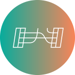

FUZZY BINAIRES
We conceptualise and run interdisciplinary workshops at the intersection of media arts and computer programming.
EDITIONS

B[ORDERS]
Online Programme
2020, July 26 > August 2

CONNECTIONS
Munich, Germany
2019, August 26 > September 01
What we are interested in right now:
Getting GTP-2 to talk to Elisa
Linking a Generative Pre-trained Transformer to ELIZA, a computer program that emulates a Rogerian psychotherapist.
Epistemology of Software and Code
"On Software, or the Persistence of Visual Knowledge", article
written by Wendy Hui Kyong Chun.
"In the 1940s software did not exist: there literally was no
software. “Programming” comprised the human task of making connections, setting switches, and
inputting values (“direct programming”)."